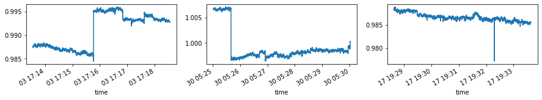

Counting Tap Changer Operations¶
This notebook steps through an exercise in exploratory analysis. Here, our objective is to mine voltage magnitude data for likely instances of tap changer operation. We’ll use statistical aggregates provided by StatPoint objects to detect and count changes.
The main objective of the post is to illustrate exploratory analysis methods which users may apply similar methods to efficiently search of events of interest to them – in other words, the methods can be generalized for problems much more complex than tap changer operations!
import numpy as np
import pandas as pd
import matplotlib.pyplot as plt
from datetime import datetime, timedelta
import btrdb
from btrdb.utils.timez import ns_delta, ns_to_datetime, to_nanoseconds
db = btrdb.connect()
Here, we’ll use PMU3 in the sunshine collection, which is located at the substation upstream from a distributed solar PV array.
streams = db.streams_in_collection('sunshine/PMU3', tags={'unit': 'volts'})
base = 7.2e3
stream = streams[0]
start, _ = stream.earliest()
end, _ = stream.latest()
dt = ns_delta(minutes=5)
pw = int(np.log2(dt))
df = pd.DataFrame([{'start': ns_to_datetime(p.time),
'end': ns_to_datetime(p.time+dt),
'count': p.count,
'min': p.min/base,
'max': p.max/base,
'mean': p.mean/base,
'stddev': p.stddev/base,}
for p, _ in streams[0].aligned_windows(start=start.time, end=end.time, pointwidth=pw)
]
)
pointwidth: 4.58 minutes
statpoints: 184549 points
| start | end | count | min | max | mean | stddev | |
|---|---|---|---|---|---|---|---|
| 0 | 2015-07-27 23:56:02.363580+00:00 | 2015-07-28 00:01:02.363580+00:00 | 4468 | 1.003660 | 1.006479 | 1.005208 | 0.000464 |
| 1 | 2015-07-28 00:00:37.241487+00:00 | 2015-07-28 00:05:37.241487+00:00 | 32986 | 1.003439 | 1.007180 | 1.005566 | 0.000506 |
| 2 | 2015-07-28 00:05:12.119394+00:00 | 2015-07-28 00:10:12.119394+00:00 | 32985 | 1.003875 | 1.009009 | 1.007294 | 0.000839 |
| 3 | 2015-07-28 00:09:46.997301+00:00 | 2015-07-28 00:14:46.997301+00:00 | 32986 | 1.006113 | 1.009292 | 1.008276 | 0.000598 |
| 4 | 2015-07-28 00:14:21.875208+00:00 | 2015-07-28 00:19:21.875208+00:00 | 32985 | 1.006857 | 1.012520 | 1.010129 | 0.000926 |
print('total time:\t%i days'%((df['end'].max()-df['start'].min()).days))
print('window width:\t%.2f minutes'%(2**pw/1e9/60))
print('N windows:\t%i points'%(len(df)))
df.head()
total time: 627 days
window width: 4.58 minutes
N windows: 184549 points
| start | end | count | min | max | mean | stddev | |
|---|---|---|---|---|---|---|---|
| 0 | 2015-07-27 23:56:02.363580+00:00 | 2015-07-28 00:01:02.363580+00:00 | 4468 | 1.003660 | 1.006479 | 1.005208 | 0.000464 |
| 1 | 2015-07-28 00:00:37.241487+00:00 | 2015-07-28 00:05:37.241487+00:00 | 32986 | 1.003439 | 1.007180 | 1.005566 | 0.000506 |
| 2 | 2015-07-28 00:05:12.119394+00:00 | 2015-07-28 00:10:12.119394+00:00 | 32985 | 1.003875 | 1.009009 | 1.007294 | 0.000839 |
| 3 | 2015-07-28 00:09:46.997301+00:00 | 2015-07-28 00:14:46.997301+00:00 | 32986 | 1.006113 | 1.009292 | 1.008276 | 0.000598 |
| 4 | 2015-07-28 00:14:21.875208+00:00 | 2015-07-28 00:19:21.875208+00:00 | 32985 | 1.006857 | 1.012520 | 1.010129 | 0.000926 |
Statistical indicators of change¶
Above, we generated a dataframe df reporting statistical aggregates for each 5-min interval in the data. We can use these aggregates to help identify time intervals where a tap change may have occurred, and differentiate them from time intervals where they likely did not.
A tap change is characterized by three phenomena:
An abrupt and sustained change in voltage magnitude
A triggering event where the voltage is high (or low) relative to the nominal voltage
Below, we’ll use exploratory data analysis to examine each of these in the data.
What constitutes an “abrupt” change?¶
The change in magnitude within a given time interval is given as follows:
\(max(values) - min(values)\)
Below, we’ll plot a histogram showing this change for each interval in the data.
fig, ax = plt.subplots(figsize=(10,3))
ax.hist(df['max']-df['min'], bins=np.logspace(-3,-1, 300))
ax.vlines(0.004, *ax.get_ylim(), color='orange', lw=3)
ax.set_xlabel('Voltage Change (p.u.)')
ax.set_xscale('log')
plt.show()

Notice that the distribution is clearly bimodal. This means that changes in voltage magnitude follow characteristically different statistics at certain times than they do at others.
The center of mass for the distribution is clearly on the left side of the histogram. This suggests that most of the time, the voltage does not change very much in a 5-min interval.
The distribution also appeard to be left tailed. This means that there are some time intervals where the voltage changes considerably, but that these are relatively few and far between. The left tail could, for example, indicate that there are voltage sags in the data. Recall that the histogram shows the difference between the minimum and the maximum voltage, but does not tell us whether or not the change was short-lived (as in a voltage sag) or if it was sustained (as it would be during a tap change).
Interlude¶
Here’s a helper function for zooming in on one of the rows of aggregate data reported in the dataframe we used above.
def zoom_in(agg, values=False):
"""This helper function takes statitistcal aggregates (as stored in the df used above)
and uses the `start` and `end` time to query data at a more granular level.
"""
if values == True:
data = stream.values(agg['start'], agg['end'])
df = pd.DataFrame([(ns_to_datetime(p.time), p.value) for p, _ in data],
columns=['time','value'])
else:
old_pw = np.log2((agg['end'] - agg['start']).total_seconds()*1e9)
new_pw = pw-6
data = stream.aligned_windows(agg['start'], agg['end'],
pointwidth=new_pw)
df = pd.DataFrame([(ns_to_datetime(p.time), p.mean) for p, _ in data],
columns=['time','value'])
return df.set_index('time')['value']
Determining whether a change is sustained¶
Here, we’ll narrow in on the data to determine whether a change was short-lived, or if it was sustained. The two figures below illustrate this difference by comparing a voltage sag with a possible tap change.
Note: These two intervals were cherry picked via trial and error (not shown here!)
example1 = zoom_in(df.loc[20390], values=True)
example2 = zoom_in(df.loc[122695], values=True)
example3 = zoom_in(df.loc[109050], values=True)
fig, ax = plt.subplots(ncols=3, figsize=(15,2))
(example1/base).plot(ax=ax[0])
(example2/base).plot(ax=ax[1])
(example3/base).plot(ax=ax[2])
plt.show()
